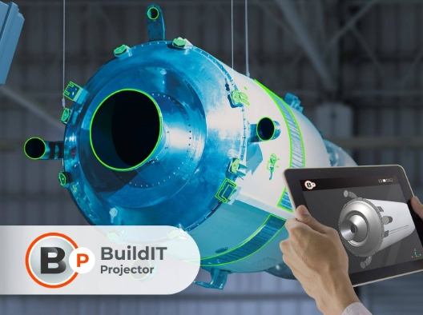

제품 설명을 입력할 예정입니다.

BuildIT Projector는 Tracer SI Laser Projector를 제어하여 CAD 데이터를 실제 작업 공간에 투영하고 검증하는 소프트웨어입니다.
작업 안내, 부품 위치 확인 및 품질 검증을 하나의 플랫폼에서 수행할 수 있습니다.
작업자에게 동일한 작업 지시를 제공하여 품질 편차를 줄일 수 있습니다.
누락 부품, 오조립 및 위치 오류를 조기에 발견하여 불량률을 줄일 수 있습니다.
물리적 템플릿 제작과 유지보수 비용을 줄이고 작업 시간을 단축할 수 있습니다.